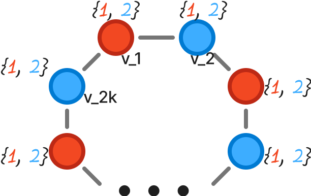
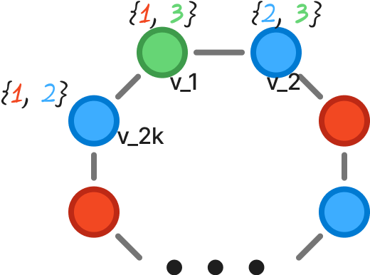

$\gdef\cone#1{\textcolor{F24822}{#1}}$
$\gdef\ctwo#1{\textcolor{3DADFF}{#1}}$
$\gdef\cthree#1{\textcolor{66D575}{#1}}$
Докажите, что списочное хроматическое число цикла на чётном числе вершин равно двум.
Обозначим цикл на чётном числе вершин $C_{2k}$ ,
нужно доказать что
$$ \Chi_l(C_{2k}) = 2,
\forall \space k>1$$
Доказательство:
Пусть V — множество вершин графа $C_{2k}$.
Через $L_{v_i}$ будем обозначать список цветов допустимых для вершины $v_i$.
Очевидно, что если $|L_{v_i}| = 1, \forall v_i \in V$, то не существует правильной раскраски,
например для случая когда все списки цветов состоят из одного и того же цвета.
Покажем, что два цвета, $|L_{v_i}| = 2$, будет достаточно
-
Предположим, что списки доступных для цветов вершин одинаковы для каждой вершины.
$L_{v_1} = L_{v_2} = ... = L_{v_{2k}}, \forall v \in V $.
Обозначим доступные цвета $\cone{1}$ и $\ctwo{2}$.
Тогда, мы можем зафиксировать произвольную вершину $v_1$ и выбрать для нее произвольный цвет, допустим $\cone1$.
Для соседней вершины $v_2$(любой из двух) мы можем выбрать цвет $\ctwo{2}$ и так далее, чередуя цвета для всех вершин мы получим раскараску графа.
Т.к. число вершин четно, цвет последней раскрашиваемой нами вершины $v_{2k}$ не будет совпадать с цветом первой вершины $v_1$ и раскараска будет правильной.

-
Теперь рассмотрим случай, когда количество списки вершин отличаются хотя бы для двух каких-то вершин, т.е общее число цветов, используемых в списках $> 2$.
Тогда существует такая пара соседних вершин, обозначим их $v_1$ и $v_{2k}$, что в $L_{v_1}$ есть такой цвет,
которого нет в $L_{v_{2k}}$(на самом деле из этого следует, что и в $L_{v_{2k}}$ есть цвет, которого нет в $L_{v_1}$).
Действительно, если предположить что таких соседних вершин не существует, то мы можем, пользуясь транзитивностью, показать что списки всех вершин совпадают
и мы оказываемся в уже рассмотренном выше случае.
Обозначим отличающийся цвет из $L_{v_1} \> \cthree{3}$. Начнем раскраску с вершины $v_1$ и покрасим ее в цвет $\cthree{3}$.
Продолжим раскраску в сторону, противоположную $2_{2k}$. Перейдем к $v_2$ — вершине соседней к $v_1$, но не равной $v_{2k}$.
Из двух цветов лежащих в $L_{v_2}$, мы сможем выбрать тот, что не равен цвету $\cthree{3}$. Продолжая раскраску по этому принципу, т.е каждый раз
выбирая цвет, не равный цвету соседней вершины, мы дойдем до $v_{2k}$.
Так мы получим правильную раскраску для цепи $v_1 ...v_{2k}$. Но наличие ребра $(v_k, v_1)$ не испортит "правильность" раскраски, т.к.
в $L_{2k}$ нет цвета $\cthree{3}$, который мы выбрали для $v_1$. Значит, цвета $v_k$ и $v_1$ не могут совпадать и раскраска будет правильной
и для $C_{2k}$.
